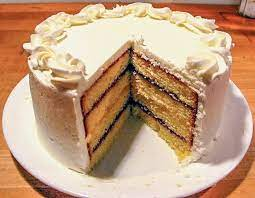

Cake

Cake is a delicious sweet treat. Seriously delish.
Ingredients
Instructions
-
Preheat oven to 350 degrees F (175 degrees C). Generously grease a 10 inch round cake pan.
-
In a medium bowl, cream the butter and sugar together until light. Stir in the flour and mix until the mixture is mealy.
Add the eggs one at a time, mixing well after each addition. Combine the baking powder and milk,
add to the egg mixture, mix well. Then combine the lemon juice and baking soda, stir into the batter. Pour into the prepared cake pan.
-
Bake for 20 minutes in the preheated oven. Remove and sprinkle the nuts and sugar over the cake,
then return it to the oven for 20 to 30 additional minutes, until cake springs back to the touch.
Gently cut a small hole in the cake and place a quarter in the hole. Try to cover the hole with sugar.
Cool cake on a rack for 10 minutes before inverting onto a plate.
-
Serve cake warm. Each person in the family gets a slice starting with the youngest.
The person who gets the quarter in their piece, gets good luck for the whole year! LUCKY!